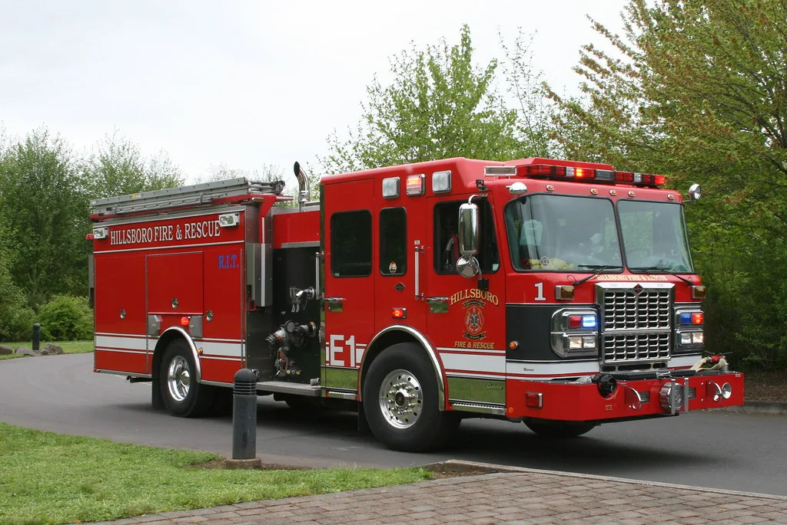

경남 가뭄 국가소방동원령 발령…전국 물탱크차 200대 총동원
정부가 지난 11일 오후 8시를 기해 경상남도에 가뭄 대응 국가소방동원령을 발령했다. 이번 동원령은 13일 오후 6시까지 이어지며, 지난해 8월 강릉 산불 당시 이후 두 번째로 내려진 국가소방동원령이다. 그만큼 이번 경남 지역 가뭄이 통상적인 수준을 넘어섰다는 의미로 받아들여진다. 소방청은 서울, 부산, 대구, 인천, 광주, 대전, 울산, 세종을 비롯한 전국 16개 시도 소방본부에서 물탱크차 200대와 소방 인력 400명을 경남 지역에 긴급 투입했다.
가뭄의 심각성은 저수율 통계에서 뚜렷하게 드러난다. 경남에서 가뭄이 가장 심한 밀양시의 농업용수 저수율은 25.7%로, 평년 수치인 74.5%의 34.4% 수준에 그친다. 경남 18개 시군 전체 평균 저수율도 33.3%로 평년(70.9%) 대비 46.9%까지 떨어진 상태다. 농업용수 가뭄 단계는 관심(평년 대비 70% 이하)·주의(60% 이하)·경계(50% 이하)·심각(40% 이하) 등 4단계로 구분되는데, 밀양시와 거제시, 함안군은 이미 가장 심각한 '심각' 단계에 진입했다.

전국에서 집결한 물탱크차는 가뭄 정도에 따라 지역별로 차등 배치됐다. 피해가 가장 큰 밀양에 40대가 투입됐고, 진주·사천·김해에 각 20대, 양산에 18대, 남해·하동에 각 14대가 배치됐다. 이 밖에 거제·의령·거창·창원에 각 10대, 창녕에 6대, 통영·함안에 각 4대가 나눠 투입돼 농업용수와 생활용수 공급을 지원하고 있다. 소방청에 따르면 12일 오후 6시 기준으로 투입된 물탱크차들은 총 4769.3톤, 653회에 걸쳐 물을 실어날랐다.
밀양시는 소방청과 협력해 소방차 40대를 동원, 13일까지 하루 1200톤 이상의 농업용수를 긴급 공급하기로 했다. 시는 가뭄 대응에 총 15억원 규모의 재원을 투입하고 있는데, 이 가운데 특별교부세 5억원은 살수차 임차와 양수기 임대 비용으로, 재난관리기금 10억원은 신규 관정 개발 비용으로 전액 쓰이고 있다. 지하수를 끌어올릴 새로운 취수원을 확보해 근본적인 물 부족 문제에 대응하겠다는 취지다.

광역상수도가 들어가지 않아 지하수 등 소규모 급수시설에 의존해온 지역의 사정은 더 열악하다. 통영시·밀양시·양산시·하동군·거제시의 섬과 마을 27곳은 새벽 시간대에 제한급수를 실시하거나, 급수선과 병물을 통해 생활용수를 공급받고 있는 상황이다. 폭염이 한풀 꺾인 뒤에도 가뭄은 오히려 심해지면서 남부권 곳곳에서 농작물 피해와 용수난이 겹쳐 나타나고 있다는 우려도 나온다.
경남도와 소방 당국은 국가소방동원령이 종료되는 13일 이후에도 강수량 추이를 지켜보며 필요할 경우 추가 지원을 검토한다는 방침이다. 다만 근본적인 해갈을 위해서는 의미 있는 수준의 비가 내려야 하는 만큼, 당분간은 물탱크차를 통한 응급 급수와 신규 관정 개발 등 임시방편적 대응이 이어질 수밖에 없는 상황이다. 지자체들은 농업용수 절약 캠페인과 함께 취약 지역에 대한 상시 모니터링 체계도 강화하고 있다고 밝혔다. 매년 여름 되풀이되는 가뭄과 폭염이 맞물리는 상황에서, 전국 소방력을 동원하는 응급 대응만으로는 한계가 있다는 지적도 나온다. 지역 농민들 사이에서는 저수지 준설과 관정 확충 등 항구적인 용수 대책을 서둘러 마련해야 한다는 목소리가 커지고 있다.